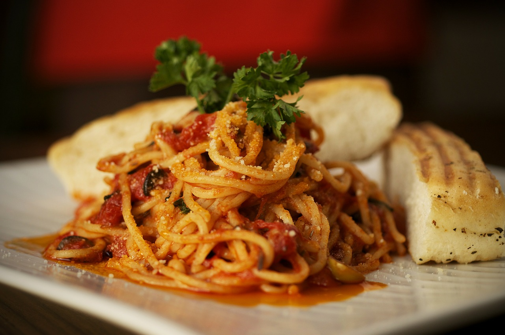

Puttanesca Bake

Bella Italia!
This puttanesca bake recipe is inspired by traditional italian cuisine. It brings the mediterranean feeling into home no matter where you are!
Ingredients:
- 160g of pasta
- 1 red onion
- 1 garlic clove
- 400g tomatoes
- handful of black olives
- chili flakes
- dries oregano
- slice of a mozzarella ball
- olive oil
- salt and pepper
- cook the pasta al dente
- fry the onion with a splash of olive oil
- add the garlic and continue frying
- add the tomatoes, olives, chili flakes, oregano and a pinch of salt and pepper, then simme for 10 minutes
- add the precooked pasta to the sauce, then top with mozzarella and cook for a few minutes